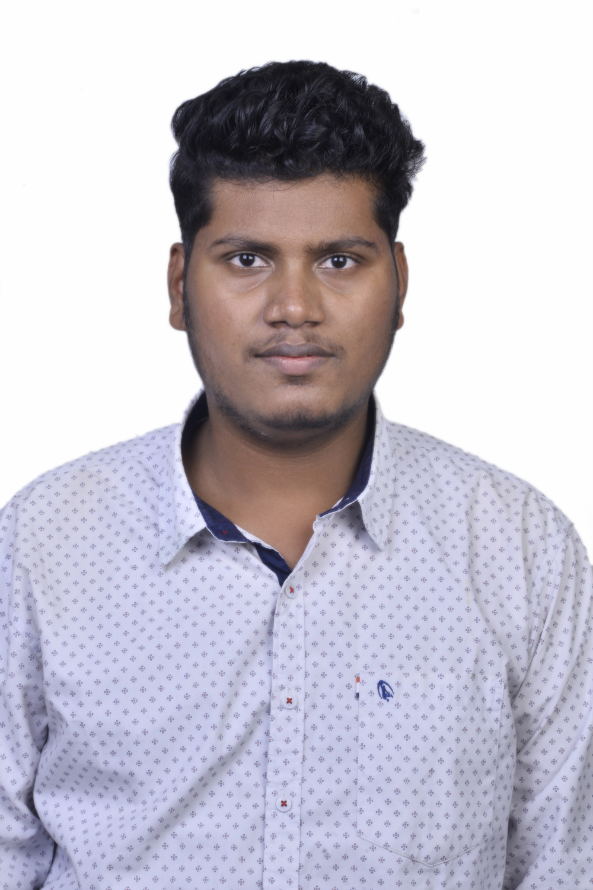

Vinayaka C S

Objective
Quality-driven Software Engineer with extensive understanding of taking and transforming ideas into applications driving business success. I intend to be a part of an organization where I can constantly learn and develop my technical and management skills and make best use of it for growth of the organization.
Education
- Bachelor of Engineering in Information Science - Bapuji Institute of Engineering and Technology, Davangere(2017-2021)
CGPA: 8.10
- P.U.C in Computer Science - SIR M.V. College, Davangere(2015-2017)
Percentage: 76.5
- SSLC - Vidya Sagar Convent, Davangere(2014-2015)
Percentage: 89.92
Work Experience
Application Development Analyst - Accenture, Banglore
Dec. 2022 – Present
- Developed COBOL and SQL programs to extract and share purchase order records weekly with other teams, automating the transfer between applications using job scheduling.
- Enhanced backend applications, contributing to the overall efficiency and functionality of the system.
- Designed training and peer-mentoring programs for future employees, reduced knowledge transition time for new hires by 50%.
Associate Software Engineer - Accenture, Banglore
Oct. 2021 – Nov. 2022
- Responsible for providing support across end-to-end delivery and run lifecycle with focus on scalability and stability of applications.
- Applied excellent troubleshooting skills to swiftly identify root causes of issues and implement effective solutions.
- Conducted thorough research and analysis to identify root causes of Major issue and implemented corrective actions to
prevent similar issues from occurring in the future.
Skills
- Programming languages: SQL, RPG/RPGLE, Cobol, Html, Css, JavaScript, React JS.
- Analytical/Visualization tools: Microsoft Excel, Service Now, Appwatch - MQ.
- Databases: MySQL, DB2.
- Software: Microsoft office, Eclipse, IBM iSeries AS400, Arduino, Visual Studio.
- Business: Agile Methodologies, JIRA, Confluence, Service Now, GitHub.
Projects
- Cotton Leaf Disease Detection: Developed an API which accurately detects the diseases in plant leaf and suggests the pesticides in order to cure the diseases. Deep learning - based approaches have shown promising results in leaf disease detection, with reported accuracies ranging from 80% to over 90%. Technologies: Python, Deep Learning, Html, CSS, Flask.
- Football Club Management System: An interactive dashboard that provided insight of developing an information system for a football club which covers maintaining a database of the club members, players, coaches, matches, and match results. Technologies: Java, XAMP, NETBEANS, MYSQL.
Other